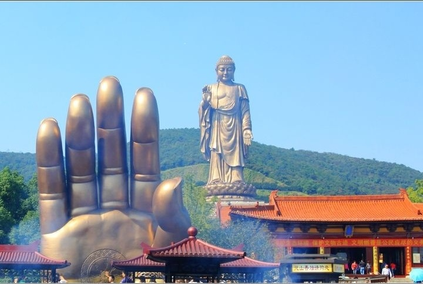

| 无锡灵山大佛 |  |
基本信息灵山大佛位于江苏省无锡市滨湖区马山镇灵山路1号，是灵山胜境的标志性景观。大佛于1997年11月15日正式落成开光，成为国家5A级旅游景区的重要组成部分。灵山大佛的总高度为88米，其中佛体高79米，莲花座高9米，使用了725吨铜铸造而成，铜板的面积相当于一个半足球场的大小。 建筑特点灵山大佛的设计结合了现代科技与传统佛教艺术，能够抵御14级台风和8级地震。佛像的造型庄重，右手做出“施无畏印”，象征着除去众生的痛苦；左手做出“施与愿印”，象征着给予快乐。大佛的雕塑工作由南京艺术家吴显林负责，展现了佛陀慈悲的法相。 文化内涵灵山大佛不仅是佛教文化的象征，还代表着慈悲、智慧与庄严。大佛周围环绕着各类佛教文物和建筑，如灵山梵宫、九龙灌浴等，构成了一个完整的佛教文化体系。灵山大佛的建立被视为中国佛教界近百年来的盛事，促进了佛教文化的交流与经济的发展。 旅游信息灵山大佛吸引了大量游客前来参观和朝拜，景区内还有丰富的文化活动和表演。游客可以在大佛脚下的展厅和梵宫中了解佛教文化的历史与演变。灵山胜境的交通便利，游客可以通过高速公路和游船轻松到达。 |
|
| 下一篇：拈花湾 | 返回 |